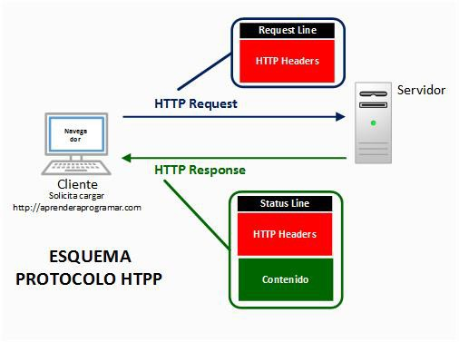

Sección de imagenes representativas del protocolo

Plantear un caso de uso de encriptación unidireccional.
Encriptación de una contraseña.
¿Cuáles son las ventajas y las desventajas de la encriptación simétrica?
La ventaja es su eficiencia, y permite encriptar grandes cantidades de datos. Su desventaja es que tiene que encontrarse un unico medio seguro para la transmisión de la clave.
¿Cómo encriptaríamos para obtener confidencialidad en la transferencia de datos?
Con clave asimetrica.
¿Como encriptaríamos para autenticar un documento usando firma electrónica?
Se encripta unicamente el hash del documento.
¿Qué tipo de encriptación se usa en la WEB?
TLS es el protocolo de seguridad que permite negociar una clave simetrica a traves de una asimetrica.
¿Sobre qué protocolo binario está montado el protocolo HTTP?
Sobre TCP/IP
¿Cuáles son los clientes http y los servidores http más utilizados?
Clientes: Navegadores como Chrome, Firefox, Safari.
Servidores: Apache, Nginx, IIS.
Qué verbos admite un comando en el requerimiento HTTP
Admite GET, POST , PUT , DELETE entre otros
¿Qué contenido lleva el body de un requerimiento HTTP?
Lleva los datos en cualquier formato, por ejemplo los del formulario enviados por POST
¿Qué diferencia existe entre un URL y un URI?
La diferencia es que URI es solo el recurso que necesito, y la URL son los datos necesarios para establecer la conexion, (protocolo,nombreHost,dominioHost,puerto)+ recurso
¿Como se almacena información relacionada con las respuestas http?
En el header(tamaño y tipo de datos).
Que significa Virtual hosting?
Significa que una misma dirección IP soporta multiples dominios para poder atender muchos pedidos de conexión
¿Por qué el HTTP se considera STATE LESS?
Se le considera "sin estado" porque cuando se termina la conexión los datos(estado) de pierden.
¿Qué nueva version de HTTP se está usando para mejorar la velocidad de la WEB?
HTTP/2 mejora la velocidad porque permite multiplex de requerimientos sin espera de respuesta.
¿Cómo va a mejorar el comportamiento de una aplicación WEB en ambientes ruidosos o de débil conexión?
HTPP/3 al basarse en el protocolo QUIC UDP, si se piede la conexion, se reestablece mas rapido
en comparación a TCP